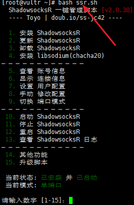

实验步骤
购买VPS服务器（实验预处理部分）
首选vultr，按小时计费，能够随时开通和删除服务器，新服务器即是新ip。 官方网站--> SSD VPS Servers, Cloud Servers and Cloud Hosting by Vultr - Vultr.com
注册并邮件激活账号，充值后即可购买服务器。 充值方式可以是支付宝或paypal或WetChat。 使用paypal 有银行卡（包括信用卡）即可。 （paypal是国际知名的第三方支付服务商，注册一下账号，绑定银行卡即可购买国外商品）。 推荐WeChat或支付宝，因为可以节省实验时间。
选择服务器，这里就是考验财力的地方啦，一般而言 $10完全够一个人用，可根据自己的要求选择。
 点击如图所示的+号开始选择服务器
对前三个
Server Location（服务器地址）：US（就我而言，综艺节目在US不会有版权问题）
Server Type（服务器系统）：CentOS6（尽量不要选Win）
Server Size（服务器大小）：40GB（小一点也没有关系）
分别进行选择后，没有特殊要求就可以Deploy Now了。
点击如图所示的+号开始选择服务器
对前三个
Server Location（服务器地址）：US（就我而言，综艺节目在US不会有版权问题）
Server Type（服务器系统）：CentOS6（尽量不要选Win）
Server Size（服务器大小）：40GB（小一点也没有关系）
分别进行选择后，没有特殊要求就可以Deploy Now了。

购买成功后即可点击如图按钮查看服务器相关参数（ip，密码）
部署服务器
安装Xshell5 即蜗牛软件，安装完成后 在 文件-->新建 对话框填写主机（即购买的VPS服务器的ip地址）。 确定后输入登陆的用户名 root 确定后填写服务器密码。 静置一段时间当输出[root@vultr ~]# 时表明，服务器连接成功。 之后就可以复制粘贴代码部署了。
yum -y install wget
wget -N --no-check-certificate https://raw.githubusercontent.com/ToyoDAdoubi/doubi/master/ssr.sh && chmod +x ssr.sh && bash ssr.sh
以上步骤完成后根据提示进行操作设置端口，密码等，基本上就可以使用了。
如果之后想修改账号信息，直接输入快捷管理命令，进入管理界面
bash ssr.sh

加速
首先更换内核
yum -y install wget
wget --no-check-certificate https://blog.asuhu.com/sh/ruisu.sh && bash ruisu.sh
第二步，一键安装锐速
wget -N --no-check-certificate
https://raw.githubusercontent.com/91yun/serverspeeder/master/serverspeeder-all.sh && bash
serverspeeder-all.sh
Hello World!!!